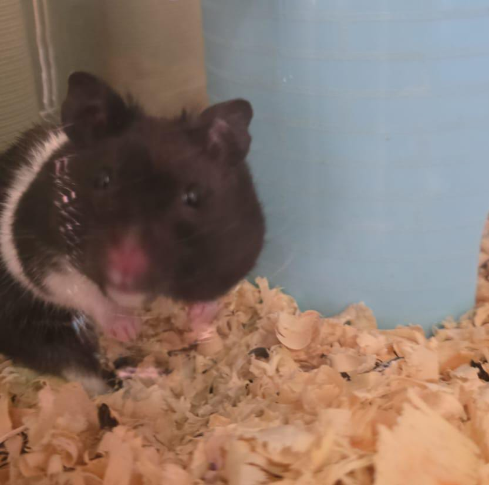
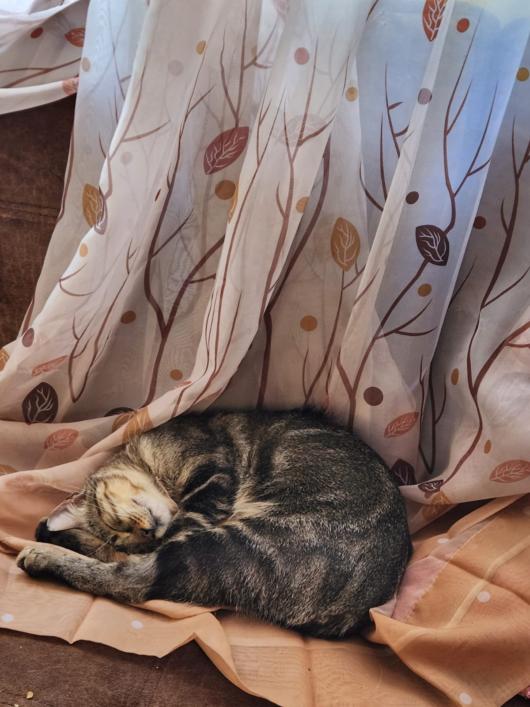
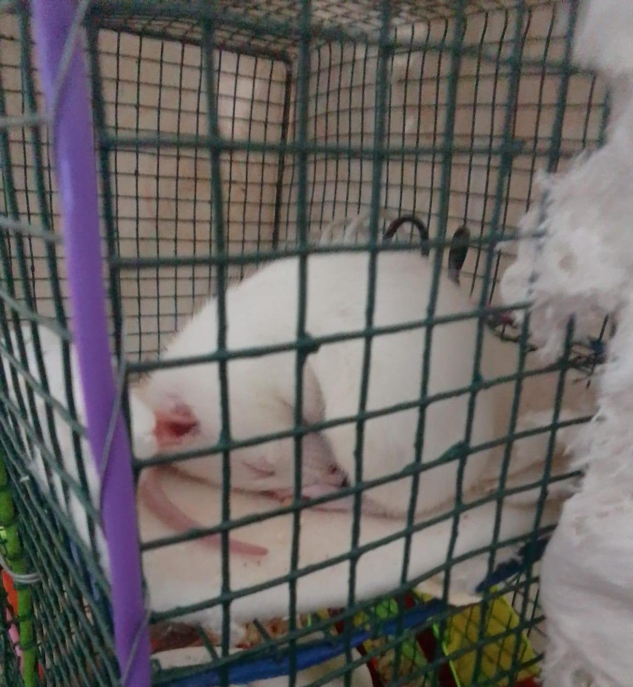
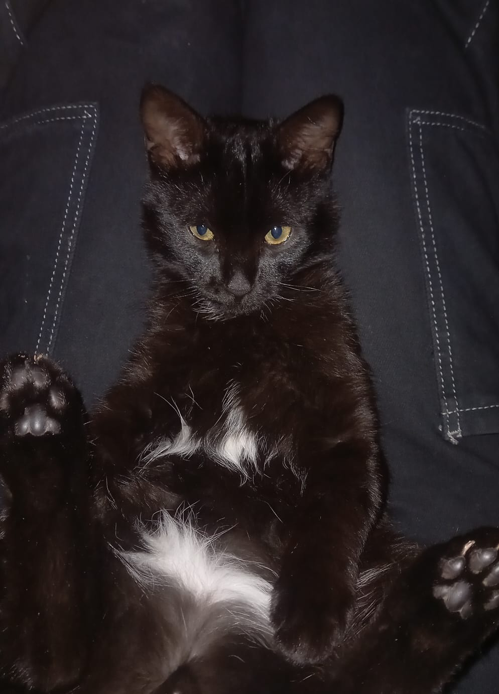

Taller de Tecnologías de Información y Comunicaciones
Misión: En el equipo, nuestro objetivo es crear soluciones efectivas. Trabajamos de manera colaborativa para alcanzar metas ambiciosas, brindando apoyo mutuo y creatividad en cada paso.
Visión: Ser el equipo de referencia en nuestra industria, reconocido por nuestra capacidad para resolver desafíos de manera eficiente y crear un ambiente de trabajo amigable.
Soy una persona alegre pero que le gusta la responsabilidad. Tengo un hámster llamado Mussolini, es de raza siria y es muy asustadizo. Estudio Negocios Internacionales en la UAC, lo elegí porque mi familia tiene esa rubrica a lo cual me inspiró.
Soy una persona muy alegre. Tengo un gato llamado Mango, le encanta dormir, come mucho y es muy travieso. Estudio Negocios Internacionales porque me pareció interesante el nombre.
Soy alguien muy divertida. Tengo una rata blanca llamada Kyo, es hiperactiva pero para mí es autista. Estudio Negocios Internacionales porque no sabía qué estudiar pero me llamó la atención esta carrera por su nombre particular.
Soy alguien creativa para resolver problemas y capaz de liderar a mi equipo. Tengo un gato llamado Sharukhan, es muy inteligente, aunque a veces es muy travieso. Estudio Derecho porque me interesa el regimiento que tiene en la sociedad.
